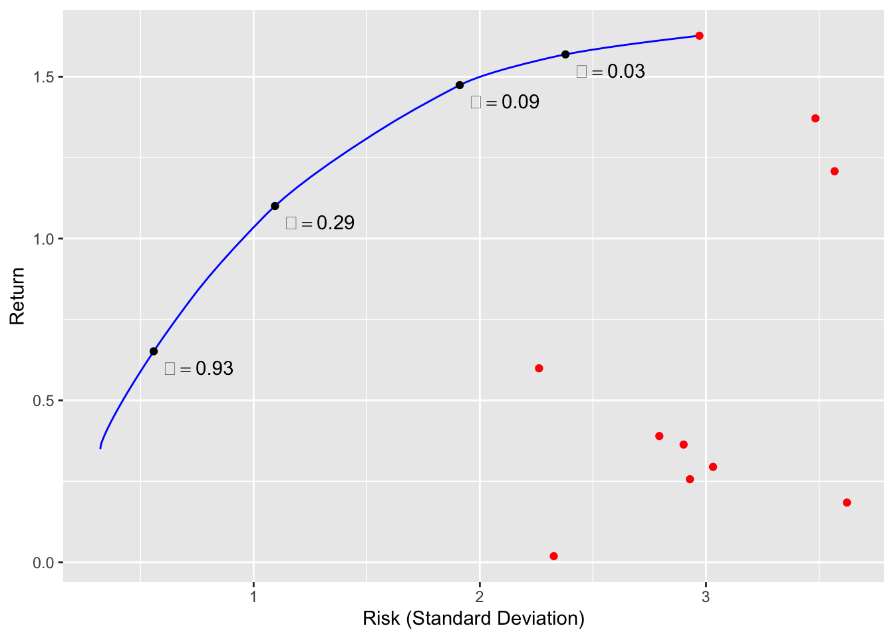

Portfolio Optimization
Introduction
In this example, we solve the Markowitz portfolio problem under various constraints (Markowitz 1952; Roy 1952; Lobo, Fazel, and Boyd 2007).
We have \(n\) assets or stocks in our portfolio and must determine the amount of money to invest in each. Let \(w_i\) denote the fraction of our budget invested in asset \(i = 1,\ldots,m\), and let \(r_i\) be the returns (, fractional change in price) over the period of interest. We model returns as a random vector \(r \in {\mathbf R}^n\) with known mean \({\mathop{\bf E{}}}[r] = \mu\) and covariance \({\mathop{\bf Var{}}}(r) = \Sigma\). Thus, given a portfolio \(w \in {\mathbf R}^n\), the overall return is \(R = r^Tw\).
Portfolio optimization involves a trade-off between the expected return \({\mathop{\bf E{}}}[R] = \mu^Tw\) and associated risk, which we take as the return variance \({\mathop{\bf Var{}}}(R) = w^T\Sigma w\). Initially, we consider only long portfolios, so our problem is \[ \begin{array}{ll} \underset{w}{\mbox{maximize}} & \mu^Tw - \gamma w^T\Sigma w \\ \mbox{subject to} & w \geq 0, \quad \sum_{i=1}^n w = 1 \end{array} \] where the objective is the risk-adjusted return and \(\gamma > 0\) is a risk aversion parameter.
Example
We construct the risk-return trade-off curve for \(n = 10\) assets and \(\mu\) and \(\Sigma^{1/2}\) drawn from a standard normal distribution.
suppressMessages(suppressWarnings(library(CVXR)))
## Problem data
set.seed(10)
n <- 10
SAMPLES <- 100
mu <- matrix(abs(rnorm(n)), nrow = n)
Sigma <- matrix(rnorm(n^2), nrow = n, ncol = n)
Sigma <- t(Sigma) %*% Sigma
## Form problem
w <- Variable(n)
ret <- t(mu) %*% w
risk <- quad_form(w, Sigma)
constraints <- list(w >= 0, sum(w) == 1)
## Risk aversion parameters
gammas <- 10^seq(-2, 3, length.out = SAMPLES)
ret_data <- rep(0, SAMPLES)
risk_data <- rep(0, SAMPLES)
w_data <- matrix(0, nrow = SAMPLES, ncol = n)
## Compute trade-off curve
for(i in seq_along(gammas)) {
gamma <- gammas[i]
objective <- ret - gamma * risk
prob <- Problem(Maximize(objective), constraints)
result <- solve(prob)
## Evaluate risk/return for current solution
risk_data[i] <- result$getValue(sqrt(risk))
ret_data[i] <- result$getValue(ret)
w_data[i,] <- result$getValue(w)
}Note how we can obtain the risk and return by directly evaluating the value of the separate expressions:
result$getValue(risk)
result$getValue(ret)The trade-off curve is shown below. The \(x\)-axis represents the standard deviation of the return. Red points indicate the result from investing the entire budget in a single asset. As \(\gamma\) increases, our portfolio becomes more diverse, reducing risk but also yielding a lower return.
library(ggplot2)
library(RColorBrewer)
cbPalette <- brewer.pal(n = 10, name = "Paired")
p1 <- ggplot() +
geom_line(mapping = aes(x = risk_data, y = ret_data), color = "blue") +
geom_point(mapping = aes(x = sqrt(diag(Sigma)), y = mu), color = "red")
markers_on <- c(10, 20, 30, 40)
nstr <- sprintf("gamma == %.2f", gammas[markers_on])
df <- data.frame(markers = markers_on, x = risk_data[markers_on],
y = ret_data[markers_on], labels = nstr)
p1 + geom_point(data = df, mapping = aes(x = x, y = y), color = "black") +
annotate("text", x = df$x + 0.2, y = df$y - 0.05, label = df$labels, parse = TRUE) +
labs(x = "Risk (Standard Deviation)", y = "Return")
We can also plot the fraction of budget invested in each asset.
library(tidyr)
w_df <- data.frame(paste0("grp", seq_len(ncol(w_data))),
t(w_data[markers_on,]))
names(w_df) <- c("grp", sprintf("gamma == %.2f", gammas[markers_on]))
tidyW <- gather(w_df, key = "gamma", value = "fraction", names(w_df)[-1], factor_key = TRUE)
ggplot(data = tidyW, mapping = aes(x = gamma, y = fraction)) +
geom_bar(mapping = aes(fill = grp), stat = "identity") +
scale_x_discrete(labels = parse(text = levels(tidyW$gamma))) +
scale_fill_manual(values = cbPalette) +
guides(fill = FALSE) +
labs(x = "Risk Aversion", y = "Fraction of Budget")Discussion
Many variations on the classical portfolio problem exist. For instance, we could allow long and short positions, but impose a leverage limit \(\|w\|_1 \leq L^{max}\) by changing
constr <- list(p_norm(w,1) <= Lmax, sum(w) == 1)An alternative is to set a lower bound on the return and minimize just the risk. To account for transaction costs, we could add a term to the objective that penalizes deviations of \(w\) from the previous portfolio. These extensions and more are described in Boyd et al. (2017). The key takeaway is that all of these convex problems can be easily solved in CVXR with just a few alterations to the code above.
Session Info
sessionInfo()## R version 3.5.1 (2018-07-02)
## Platform: x86_64-apple-darwin17.7.0 (64-bit)
## Running under: macOS 10.14
##
## Matrix products: default
## BLAS/LAPACK: /usr/local/Cellar/openblas/0.3.3/lib/libopenblasp-r0.3.3.dylib
##
## locale:
## [1] en_US.UTF-8/en_US.UTF-8/en_US.UTF-8/C/en_US.UTF-8/en_US.UTF-8
##
## attached base packages:
## [1] stats graphics grDevices datasets utils methods base
##
## other attached packages:
## [1] tidyr_0.8.2 RColorBrewer_1.1-2 ggplot2_3.1.0
## [4] CVXR_0.99-1
##
## loaded via a namespace (and not attached):
## [1] gmp_0.5-13.2 Rcpp_0.12.19 bindr_0.1.1
## [4] pillar_1.3.0 compiler_3.5.1 plyr_1.8.4
## [7] R.methodsS3_1.7.1 R.utils_2.7.0 tools_3.5.1
## [10] digest_0.6.18 bit_1.1-14 evaluate_0.12
## [13] tibble_1.4.2 gtable_0.2.0 lattice_0.20-35
## [16] pkgconfig_2.0.2 rlang_0.3.0.1 Matrix_1.2-15
## [19] yaml_2.2.0 blogdown_0.9.2 xfun_0.4
## [22] bindrcpp_0.2.2 withr_2.1.2 dplyr_0.7.7
## [25] Rmpfr_0.7-1 ECOSolveR_0.4 stringr_1.3.1
## [28] knitr_1.20 tidyselect_0.2.5 rprojroot_1.3-2
## [31] bit64_0.9-7 grid_3.5.1 glue_1.3.0
## [34] R6_2.3.0 rmarkdown_1.10 bookdown_0.7
## [37] purrr_0.2.5 magrittr_1.5 backports_1.1.2
## [40] scales_1.0.0 htmltools_0.3.6 scs_1.1-1
## [43] assertthat_0.2.0 colorspace_1.3-2 labeling_0.3
## [46] stringi_1.2.4 lazyeval_0.2.1 munsell_0.5.0
## [49] crayon_1.3.4 R.oo_1.22.0Source
References
Boyd, S., E. Busseti, S. Diamond, R. N. Kahn, K. Koh, P. Nystrup, and J. Speth. 2017. “Multi-Period Trading via Convex Optimization.” Foundations and Trends in Optimization.
Lobo, M. S., M. Fazel, and S. Boyd. 2007. “Portfolio Optimization with Linear and Fixed Transaction Costs.” Annals of Operations Research 152 (1): 341–65.
Markowitz, H. M. 1952. “Portfolio Selection.” Journal of Finance 7 (1): 77–91.
Roy, A. D. 1952. “Safety First and the Holding of Assets.” Econometrica 20 (3): 431–49.